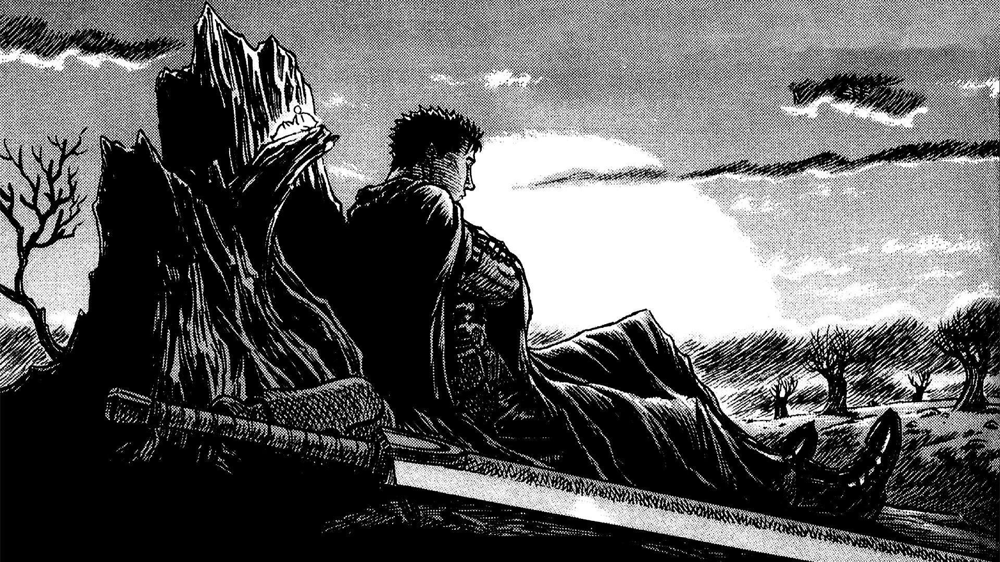
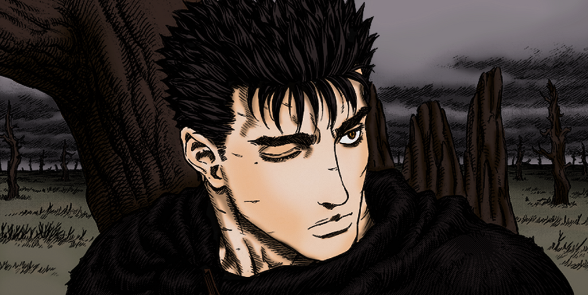
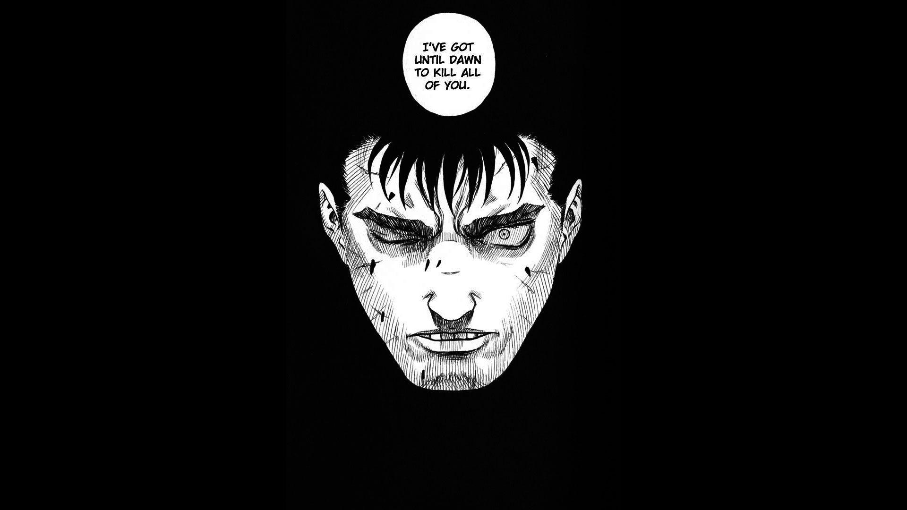

I'm really in awe of late Kentaro Miura's work on "Berserk" which consumed
more than three decades of his life (1989-). The manga is nothing short of "genius" as
the way kentaro illustrated it is a masterclass itself, The world-building, The
character-development,
and most importantly "The Art work", Berserk is widely known for it's art work and is
said to have some of the most gruesome and diabolical pages to be ever drawn by a mangaka.

More about the book.
The manga till date consists a total of 41 volumes and 373 chapters out of which kentaro
penned chapter 364 as the last of his legacy. The work of his life is now being carried
out by his childhood bestfriend "Koji Mori" as he's trying answer all the questions fans
have been waiting to be answered for more than decades now.
The manga is shortly divided into five arcs, also listed in the order of their release -
...The Black Swordsmen Arc. (chapters 0A - 0H)
...The Golden Age Arc. (chapters 001 - 095)
...The Conviction Arc. (chapters 096 - 176)
...The Faclon of the Millenium Empire Arc. (chapters 177 - 307)
...The Falconia Arc. (chapters 307 - )

Stroy walk-through.
Being set in the medieval europe, The story is a complete package and carries
a pinch of all "Dark-fantasy", "High-fantasy", "Swords and Sorcery". The story primarily
focuses on a lone-swordsman "Guts" and secondarily on the characters that revolve around him.
The events of the black swordsmen arc are the one's which occured after the golden age arc in
chronological order.
The black swordsmen arc follows the heroic and adventures tale's of our main
character Guts
who's set's out on a journey to find 'Griffith' a very main character of our story also
someone who used to be Guts's friend in the distant past, in order to annihilate and cease his
existence to soak up his revenge upon him.
The scars and brusies that Griffith gave him are some what indelible.
The Golden age arc is where all this begins from, From Guts being born from the
womb
of a dead women on a battlefield to him joining the band of the hawk's as a mercenery.
Guts, Griffith and Casca were in the same "Band of the hawk" led by the illusionary, beautifull
and mesmerizing Griffith himself, untill the night of havoc tained the tapestry of Gut's life
turning it completey upside down. The infamous "Eclipse", which takes place only
once in every 216 years. Griffith in hunger for power and dream to have his own kingdom sacrificed
his own band while using Guts and Casca as the sacrifical pawns inorder to become one of the five
god-hand members. Not enough of him to even make Guts watch his love intrest Casca getting raped.
Guts went berserk and amputated his arm off but barely managed to even lay a blow on the newly
incarnated God-hand member the mighty "Femto". Luckily someone was keeping an eye on Guts looking
out for him the annonymous "skull knight" who ultimately saved his and Casca's life by pulling
them out of the eclipse.

Guts teared up.
The Conviction Arcpicks the story up right where the golden age
arc ended, Guts our fearsome hero sets out on yet another journey but this time to
find casca as she went doodling because of her mental retardness. Casca finds herself
trapped and accussed for being a witch by an holy see apostle "Mozgus" and was sentenced to
be burned alive just when Guts interviene's and save's her, this is also when they meet
after two years. During the events of the "birth ceremony arc" Femto is reborn as Griffith.